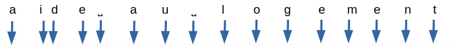

When we browse the web, autocompletion is almost everywhere. In particular, this functionality is implemented on search engines, whether they are website-specific or not. So, when the user types in the words they are looking for, suggestions are made dynamically, whether to complete the words or phrases they type in or to display the search results as characters are added.
In the case of Google, these suggestions are often derided as incongruous. Not to mention the SEO chestnut about the death of the search engine.

Take the example of the Google search engine:

Here, the blue arrows represent character inputs and the black rectangles represent autocomplete queries.
We arrive at a total of 16 XHR type queries for 5.1 kb transferred.
The number of queries remains the same whether the input is fast (input in 2 seconds for the whole search) or longer (7 seconds in total for the input).
Autocompletion can also be found in some input forms, to ensure that the text entered corresponds to what is expected (city, country, etc).
While this mechanism can be an aid to the user, the environmental impact of the queries generated should not be overlooked. Let’s see how to limit them.
First recommendations
If sobriety is a priority, the best thing to do is not to integrate an autocomplete mechanism. However, input help is a definite advantage for users in most cases.
In the case of forms, the GreenIT.fr collective’s collection of 115 good practices in web ecodesign recommends input assistance. In this way, less strain is placed on the server while ensuring that the text entered remains consistent with what is expected.
On the GR491 side, there are two recommendations:
- Limit unnecessary searches by local search engines: this is based on the number of letters entered in order to space out the queries
- Limit the number of requests between the client and the server: this more general good practice applies perfectly here
Rather than systematically implementing autocompletion and search, it is sometimes possible to make filters (and sorting mechanisms) available to the user.
With these initial elements in mind, let’s look at how we can go even further.
Recommendations
Ensure that requests are as light as possible
When the client sends a request to the server, ensure that it contains only the elements necessary to provide a relevant response.
When the server sends a response, again ensure that :
- Only relevant fields are returned. For example, it is not always necessary to display an image for each result
- Only the necessary elements are returned (relevance of responses and pagination of results)
Do not offer autocompletion before a few characters
Before launching the first query, it is preferable to wait until 5 characters have been entered or at least 2 seconds have elapsed since the last entry by the user.
This avoids returning results for a request that is too vague (when the number of characters entered is insufficient), while taking into account the case where the term searched for is deliberately short (« summer », etc).
Spacing out the queries in time
After the initial query, wait until 3 new characters have been entered or at least 2 seconds have elapsed since the last query.
Limit the number of queries for fast entries
In addition to the previous rule, in the case of fast input, wait at least one second between each request. Indeed, some particularly fast users can enter a character every 200 ms.
Measuring local relevance
When a user adds characters to his search, the results become more precise and their number decreases. It is possible to perform this filtering directly locally, without additional requests to the server. For example, if results were obtained for « housing assistance », it is possible to filter on the client side if the user continues by typing « housing assistance ».
This good practice is particularly relevant in the case of an input field in a form. For example, when entering a city or country, the elements of an initial query can be refined locally as the user continues to type.
Be aware that if a space is entered and new terms are added, the logic chosen for the search results must be taken into account. In particular, should a result contain all the terms entered or only some of them?
Be careful also to take into account the case where the user deletes some of the characters entered. You may also want to temporarily store the queries you have already made so that you can use them again if necessary.
Back to the example of the Google search engine
Taking the case of the Google search engine mentioned at the beginning of the article (16 queries, 5.1 KB transferred), we arrive at 3 queries in total for 1 KB transferred.

- A first query only performed when at least 5 characters have been entered.
- A second query when 3 more characters have been entered.
- A third query when 3 more characters have been entered.
- The local evaluation of the results to be returned at the end of the input, since it is only a question of filtering the results obtained following the third query.
Conclusion
If autocompletion is a necessity and assisted input is not possible, the following good practices should be implemented:
- Ensure that queries are as light as possible
- Do not offer autocompletion before a few characters
- Spacing out queries over time
- Limit the number of queries for quick entries
- Measure relevance locally
Finally, although this input help may be beneficial to many users, do not neglect its accessibility.